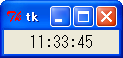
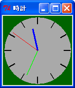
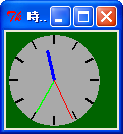
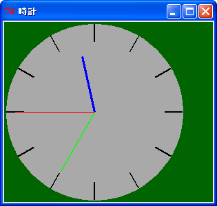

簡単な例題として、リサイズ可能なアナログ時計を作ってみましょう。時計をウィンドウいっぱいに広げるのは面倒なので、幅と高さの短い方に合わせて時計を描画することにします。キャンバスウィジェットに長針、短針、秒針を描き、1 秒ごとに針の位置を動かします。短針は動きを滑らかにするために、1 分ごとに位置を動かします。したがって、短針を動かす角度は 360 / (12 * 60) = 0.5 度となります。
今回はユーザからの入力がなくても時計を動かさないといけなので、単純なイベント駆動型アプリケーションでは「時計」を実現することはできません。このため、プログラム自身でなんらかのきっかけを作ってやる必要があります。このような場合、役に立つメソッドが after() です。
このように、after() には単純な時間待ちを行うほかに、一定時間後に指定した command を起動するタイマーの働きも持っています。たとえば、一定間隔で実行する関数を foo() としましょう。この場合、foo() の最後で after() を使って自分自身の起動を設定すればいいのです。具体的には次のようにプログラムします。
def foo():
# foo の処理
.....
root.after(500, foo)
root はメインウィンドウを表します。これで 500 msec 後に foo() が実行されます。もっとも、厳密に 500 msec ごとに foo() が実行されるわけではありません。foo() の処理にも時間がかかりますし、Windows はマルチタスクで動作しているので、ほかのタスクの影響も受けるからです。まあ、厳密なリアルタイム処理は必要としないので、これで十分です。
現在の日付と時刻を求めるには Python のモジュール time を使います。時間を求める主な関数を示します。
gmtime(), localtime() の返り値や strftime() の format で指定できる書式は Python のマニュアルを参照してください。今回は時間に関する書式を使います。
%H 時刻（00 - 23) %I 時刻 (01 - 12) %M 分（00 - 59） %S 秒（00 - 61）
strftime() を使えば、デジタル時計は簡単に作成することができます。
リスト：デジタル時計
from Tkinter import *
from time import *
root = Tk()
root.option_add('*font', ('FixedSys', 14))
buff = StringVar()
buff.set('')
Label(textvariable = buff).pack()
# 時刻の表示
def show_time():
buff.set(strftime('%I:%M:%S'))
root.after(1000, show_time)
show_time()
root.mainloop()
メニューでフォントを変更できるように改造すると、おもしろいと思います。
 デジタル時計
最初に画面を設定します。ウィンドウが小さくなると時計がよく見えないので、ウィンドウの大きさを制限します。これはメソッド minsize() と maxsize() で設定することができます。幅と高さはピクセル単位で指定します。次のリストを見てください。
リスト：画面の設定
# メインウィンドウ
root = Tk()
root.title(u'時計')
root.minsize(100, 100)
root.maxsize(400, 400)
# グローバル変数
width = 140
sin_table = []
cos_table = []
backboard = []
# キャンバス
c0 = Canvas(root, width = 140, height = 140, bg = 'darkgreen')
c0.pack(expand = True, fill = BOTH)
# 図形の生成
circle = c0.create_oval(5, 5, 135, 135, fill = 'darkgray', outline = 'darkgray')
for i in range( 12 ):
backboard.append(c0.create_line(i, i, 135, 135, width = 2.0))
hour = c0.create_line(70, 70, 70, 30, fill = 'blue', width = 3.0)
min = c0.create_line(70, 70, 70, 20, fill = 'green', width = 2.0)
sec = c0.create_line(70, 70, 70, 15, fill = 'red')
ウィンドウの大きさは、幅と高さを 100 から 400 ピクセルの範囲に制限します。背景の円と目盛を表す図形は、変数 circle とリスト backboard に格納します。針を表す図形は変数 hour, min, sec に格納します。ここは図形を生成するだけなので、位置はでたらめでもかまいません。
さて、問題はウィンドウがリサイズされた場合です。ここで発生するイベントが Configure です。このイベントをバインドして、ウィンドウの大きさが変わったら時計を再描画すればいいわけです。バインドはメインウィンドウに対して設定すれば大丈夫です。
root.bind('<Configure>', change_size)
キャンバスウィジェットは fill と expand を設定して pack されているので、ウィンドウの大きさが変わると、キャンバスの大きさも変わります。詳しい説明は ウィンドウのリサイズ をお読みくださいませ。このときに Configure イベントを受け取るので、時計の大きさを変える関数 change_size() を実行します。
キャンバスウィジェットの大きさですが、これは cget() メソッドでは求めることができません。実際、ウィンドウがリサイズされキャンバスウィジェットが引き伸ばされても、最初に設定されたオプションの値そのままになっています。キャンバスウィジェットの大きさを求めるには、ウィジェットの情報を取得するメソッド winfo_width() と winfo_height() を使います。change_size() は次のようになります。
リスト：大きさの変更
def change_size(event):
global width
w = c0.winfo_width()
h = c0.winfo_height()
if w < h:
width = w
else:
width = h
draw_backboard()
draw_hand()
width は時計の大きさを表すグローバル変数で、キャンバスと同じ大きさに初期化しておきます。キャンバスの幅と高さを求め、小さい方を width にセットします。図形の配置は背景を関数 draw_backboard() で、針を関数 draw_hand() で行います。これらの関数は width にセットされた大きさに合わせて時計を描画します。描画は coords() メソッドで図形を移動させるだけです。針を動かす関数 draw_hand() は次のようになります。
リスト：針の描画
def draw_hand():
t = time.localtime()
r = width / 2
rs = r * 7 / 8
rm = r * 6 / 8
rh = r * 5 / 8
# 秒
n = t[5] * 12
x = r + rs * sin_table[n]
y = r - rs * cos_table[n]
c0.coords(sec, r, r, x, y)
# 分
n = t[4] * 12
x = r + rm * sin_table[n]
y = r - rm * cos_table[n]
c0.coords(min, r, r, x, y)
# 時
h = t[3]
if h >= 12: h -= 12
n = h * 60 + t[4]
x = r + rh * sin_table[n]
y = r - rh * cos_table[n]
c0.coords(hour, r, r, x, y)
まず localtime() で現在時刻を求めます。返り値のタプルには、t[3] に時間、t[4] に分、t[5] に秒が格納されています。時計の半径を r に、秒針、長針、短針の長さを rs, rm, rh にセットします。あとは、あらかじめ計算しておいた三角関数表 sin_table と cos_table を使って座標を計算し、メソッド coords() で針を移動させます。背景を描画する draw_backboard() も簡単です。説明は割愛いたしますので、詳細は プログラムリスト をお読みくださいませ。
あとは after() メソッドを使って、１秒ずつ針を動かします。
# 表示
def show_time():
draw_hand()
root.after(1000, show_time)
show_time() は draw_hand() を呼び出して針を描画し、1 秒後に show_time() を呼び出すよう after() メソッドで設定します。最後に show_time() を実行すれば、1 秒ごとに短針が動き、時計が動作します。
 デフォルトサイズのアナログ時計
 ウィンドウを縮小 ウィンドウを拡大
これで、リサイズ可能なアナログ時計を作ることができました。ただ、縦長や横長にしても、ウィンドウ全体に時計が拡大されるわけではないので、やや物足りないかもしれません。興味のある方は時計を楕円にするなど、プログラムの改造に挑戦してください。
リスト：アナログ時計
# coding: utf-8
from Tkinter import *
import math, time
# メインウィンドウ
root = Tk()
root.title(u'時計')
root.minsize(100, 100)
root.maxsize(400, 400)
# グローバル変数
width = 140
sin_table = []
cos_table = []
backboard = []
# キャンバス
c0 = Canvas(root, width = 140, height = 140, bg = 'darkgreen')
c0.pack(expand = True, fill = BOTH)
# 図形の生成
circle = c0.create_oval(5, 5, 135, 135, fill = 'darkgray', outline = 'darkgray')
for i in range( 12 ):
backboard.append(c0.create_line(i, i, 135, 135, width = 2.0))
hour = c0.create_line(70, 70, 70, 30, fill = 'blue', width = 3.0)
min = c0.create_line(70, 70, 70, 20, fill = 'green', width = 2.0)
sec = c0.create_line(70, 70, 70, 15, fill = 'red')
# データの初期化
def init_data():
for i in range(720):
rad = 3.14 / 360 * i
sin_table.append(math.sin(rad))
cos_table.append(math.cos(rad))
# 背景の描画
def draw_backboard():
r = width / 2
# 円
c0.coords(circle, 5, 5, width - 5, width - 5)
# 目盛
for i in range(12):
n = i * 60
x1 = r + (r - 5) * sin_table[n]
y1 = r + (r - 5) * cos_table[n]
x2 = r + (r - 5) * 4 / 5 * sin_table[n]
y2 = r + (r - 5) * 4 / 5 * cos_table[n]
c0.coords(backboard[i], x1, y1, x2, y2)
# 針を描く
def draw_hand():
t = time.localtime()
r = width / 2
rs = r * 7 / 8
rm = r * 6 / 8
rh = r * 5 / 8
# 秒
n = t[5] * 12
x = r + rs * sin_table[n]
y = r - rs * cos_table[n]
c0.coords(sec, r, r, x, y)
# 分
n = t[4] * 12
x = r + rm * sin_table[n]
y = r - rm * cos_table[n]
c0.coords(min, r, r, x, y)
# 時
h = t[3]
if h >= 12: h -= 12
n = h * 60 + t[4]
x = r + rh * sin_table[n]
y = r - rh * cos_table[n]
c0.coords(hour, r, r, x, y)
# 大きさの変更
def change_size(event):
global width
w = c0.winfo_width()
h = c0.winfo_height()
if w < h:
width = w
else:
width = h
draw_backboard()
draw_hand()
# 表示
def show_time():
draw_hand()
root.after(1000, show_time)
# バインディング
root.bind('<Configure>', change_size)
# データの初期化
init_data()
# 最初の起動
draw_backboard()
show_time()
# メインループ
root.mainloop()